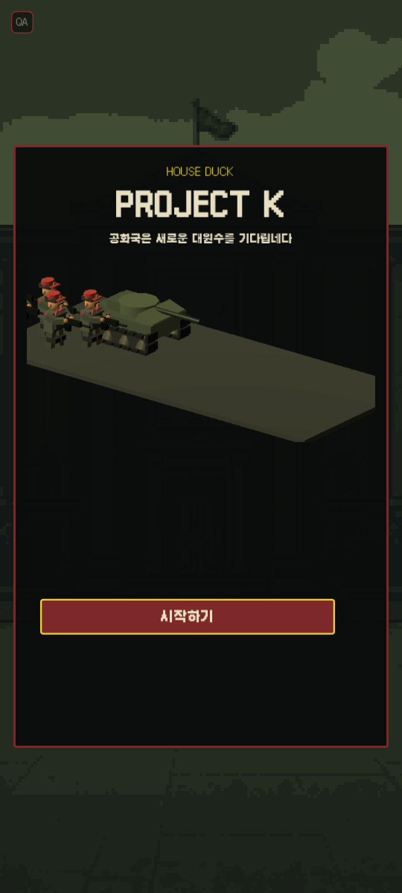
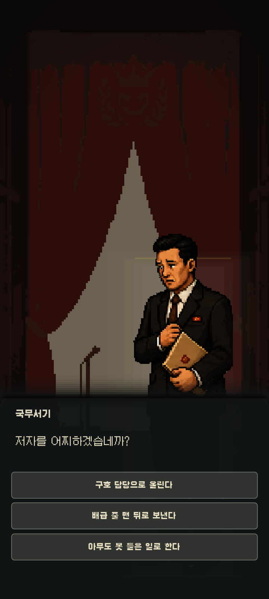
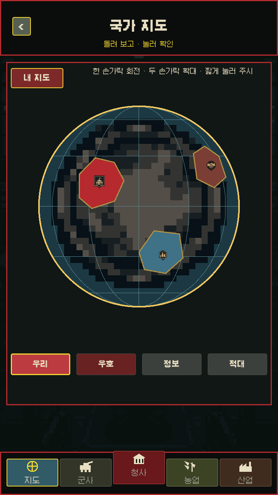
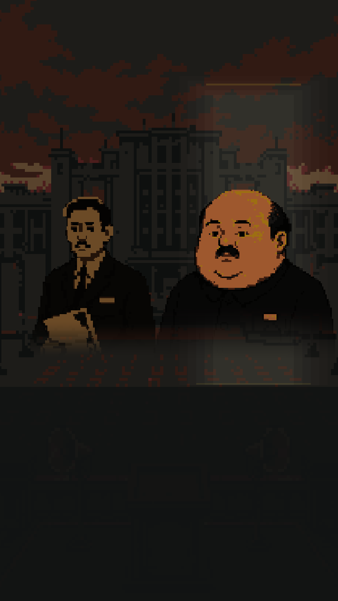
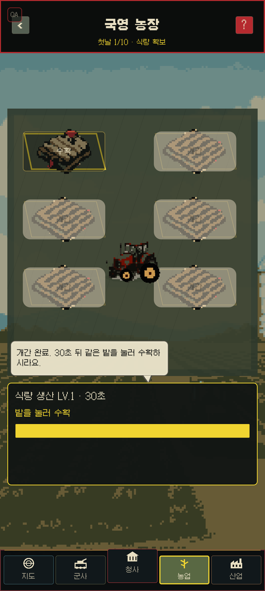
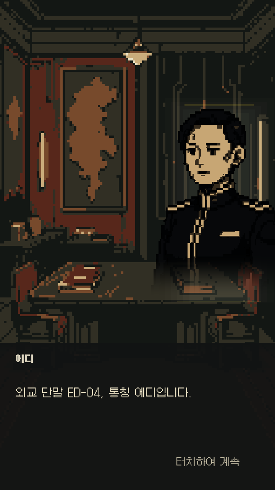

決裁と物語
食い違う報告を読み、ひとつを選ぶ。その判断が次の会話や事件の理由になります。
Project K · 開発中
AIが世界を運営する西暦2187年。最後に残った閉鎖国家の新たな指導者となり、プロパガンダと現実の隔たりを管理してください。農場を立て直し、現場を視察し、外交と戦争を決める。何気ない選択さえ、思いがけない物語となって戻ってきます。



あなたの国 · あなたの結果
数字を伸ばすだけではありません。書類に残した決断は、現場の表情と新たな事件になって戻ってきます。
食い違う報告を読み、ひとつを選ぶ。その判断が次の会話や事件の理由になります。
農場、鉱山、視察ルートへ足を運び、報告書の数字が現実でも動くのかを確かめます。
好きな分野を重点的に育て、設備や景色、できることが変わっていく過程を見届けます。
外交、情報、対立を通じて他国との関係を築き、自分の国が残した記録を競います。
実機クライアントの画面
演出用のモックアップではありません。以下はすべて、現在のProject Kクライアントから直接撮影した画面です。



仮題 · 開発中
Project Kは現在の仮題です。完成度を優先するため、開発状況や公開時期は変更される場合があります。